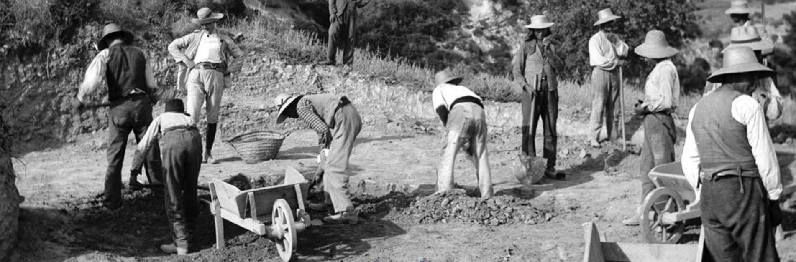

<div class="container-fluid">
    <div class="row">
        <div [class.col-md-12]="!this.selectedDocument"
             [class.col-md-9]="this.selectedDocument" class="projectMap::after" id="projectMap">
        </div>
        <div *ngIf="this.selectedDocument" class="col-md-3 container-fluid nopadding" id="sidebar">
                
                <div class="jumbotron" style="color: white; background-color: #6A7DAA; padding: 32px; border-radius: 0px;">
                    <h1>{{this.selectedDocument}}</h1>
                    <p>Project</p>
                </div>
                <p style="padding-left: 32px;padding-right: 32px;">Im Oktober 2015 wurde ein tunesisch-deutsches Feldforschungsprojekt in Meninx, der größten antiken Stadt auf Djerba, begonnen.</p>
        </div>
    </div>
</div>